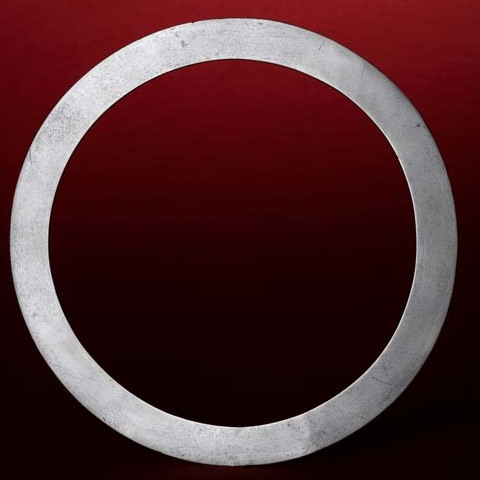
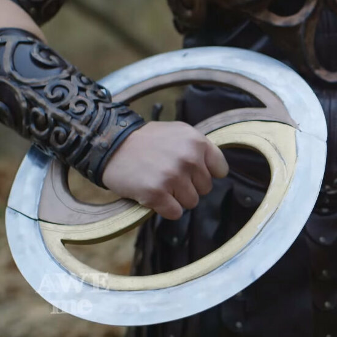
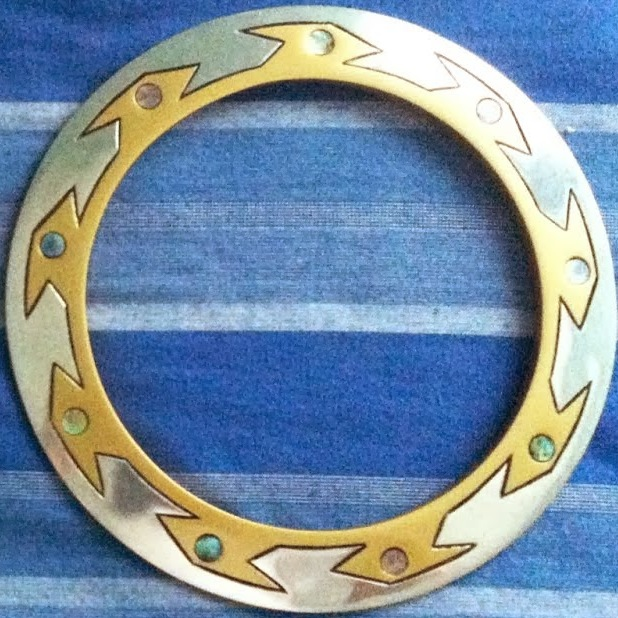
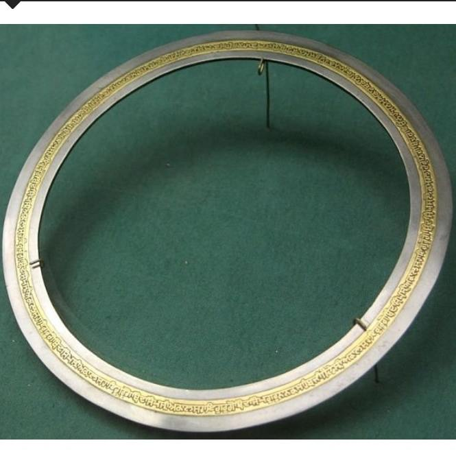

PHOTOS




While it is my first time using a chakram, this is convenient that I can wear it on my arm while carrying, and my new favourite. I'm not better at controlling the aim yet and will practice doing so. (anonymous, five centuries ago)
This looks not a real weapon, so I can grab it from my hat and throw it quickly without being warned by the other party once I come under a surprise attack. And, mine is a lightweight that weighs only about 200 grams per it and quite light. (anonymous, three centuries ago)